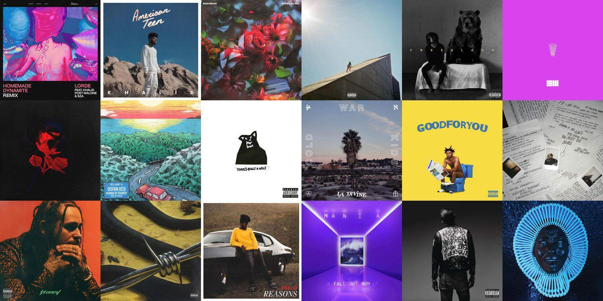
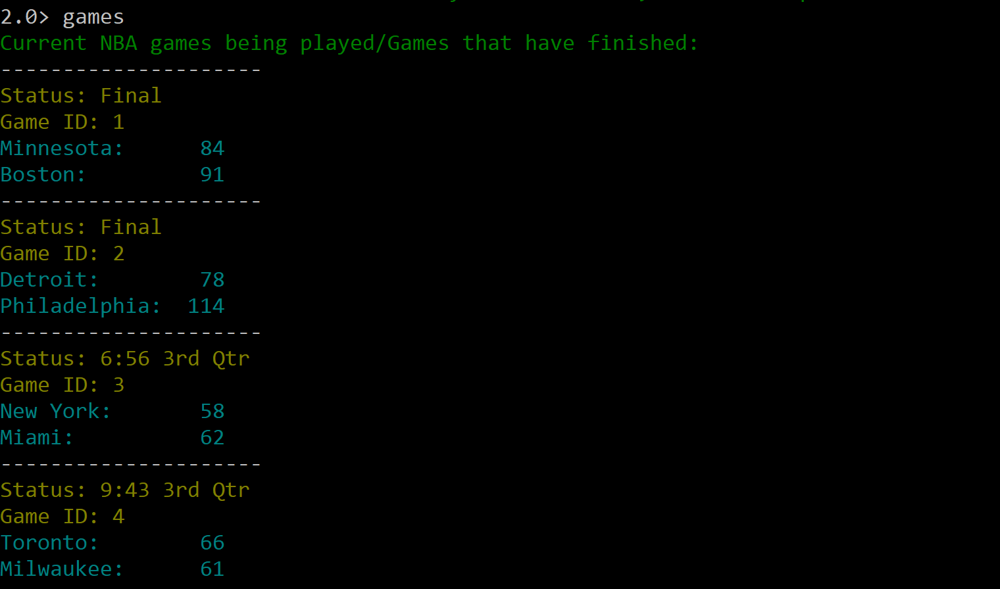

ShiftLeft Software Engineer Intern (In Progress)
Description: Part of the Runtime Infrastructure Team
Notable Aspects:
- Usage of Docker: building images, running containers, and working with .yaml files
- Worked heavily on Wildebeest, a Shiftleft application that performs end-to-end testing of its services, by adding more tests, testing features, resolving issues, and increasing optimization of application runtime
- Other resources were the Github repository pipeline and the Dockerhub repositories
- Monitored metrics through usage of Prometheus and our internal TSDB's
ShieldX Software Engineer Intern
Description: Developed a command life interface in Python that allows the user to interact with the ShieldX API
Notable Aspects:
- Made of seven files: one file that outputs all information to the user; one file to store all the data that the user requests for; and five other files to interact with the API and retrieve information
- Implemented login system that requires user to specify IP address, username, and password to access the CLI’s functions
- Regular expressions were utilized in order for the user to have quick autocompletion of commands
- Requests module was used to make GET, PUT, POST, and DELETE requests
- JSON module was used to interpret data received from requests
- ContextLib module was used to open/close connections to the API
WallDrop: Personal Project
Description: Developed an executable application that prompts the user to login with their Spotify account, and returns a wallpaper made up of 18 of their top track's album covers.
Notable Aspects:
- With user authorization, the program makes requests to the Spotify API and we request 50 of their top tracks as to ensure no repeats
- Parses the API response for the urls for 300 x 300 pixel pictures of the album cover of a specific track
- Program automatically downloads all of the urls for the 18 unique songs and uses a module known as PIL to stich together all of the images
- Wallpaper is downloaded to the directory in which the program is executed
NBA-CLI: Personal Project
Description: Created the NBA CLI in Python that allows the user to check live scores, league standings, and boxscores for finished games from their computer’s terminal
Notable Aspects:
- Implemented the design approach of the ShieldX project (this code is made publicly available unlike the ShieldX CLI)
- Features the BeautifulSoup4 module for lightweight parsing of an NBA stats website in which data was gathered from
- Utilizes a module called py2exe in order to store entire Python file into a .exe file so user does not need Python to run
SpotCon: Personal Project

Description: Developed the Spotcon Android app that requests a Spotify song link from the user, and returns an mp3 that can be downloaded to the user’s device
Notable Aspects:
- Android Programming using Android Studio
- Usage of the Android package OkHttp to make requests to Spotify and an online API called YoutubeToMp3API
- Algorithm: Parses Spotify link to retrieve song name -> uses song name to make a Youtube query and retrieve the video that most correlates with the song name -> sends Youtube link to YoutubeToMp3 API -> Downloads the video as an MP3